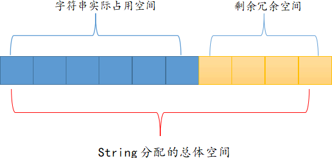

Redis string字符串
string（字符串）是 Redis 中最简单的数据类型。我们知道，Redis 所有数据类型都是以 key 作为键，通过检索这个 key 就可以获取相应的 value 值。Redis 存在多种数据类型，比如字符串、列表、哈希散列等，它们对应的 value 结构各不相同。本节先讲解字符串的相关知识。
下图展示了 SDS 字符串的结构示意图：

图1
上图 1 存储了一个
如图 2 所示，Redis 每次给 string 分配的空间都要大于字符串实际占用的空间，这样就在一定程度上提升了 Redis string 存储的效率，比如当字符串长度变大时，无需再重新申请内存空间。
在练习命令的过程中，大家要善于利用 Redis 客户端给出的自动语法提示，比如
Redis string 的
示例如下：
示例如下：
查看更多命令：https://redis.io/commands
认识Redis字符串
Redis 使用标准 C 语言编写，但在存储字符时，Redis 并未使用 C 语言的字符类型，而是自定义了一个属于特殊结构 SDS（Simple Dynamic String）即简单动态字符串），这是一个可以修改的内部结构，非常类似于 Java 的 ArrayList。1) SDS动态字符串
SDS 的结构定义如下：
struct sdshdr{
//记录buf数组中已使用字符的数量，等于 SDS 保存字符串的长度
int len;
//记录 buf 数组中未使用的字符数量
int free;
//字符数组，用于保存字符串
char buf[];
从上述结构体可以看出，Redis string 将字符串存储到字符类型的buf[]中，并使用 len、free对buf[]数组的长度和未使用的字符数进行描述。下图展示了 SDS 字符串的结构示意图：
图1
上图 1 存储了一个
len为 4 的 “java\0”字符串，并且未使用的字符数free为 0。你可能注意到 buf 数组存储的字符串仍然以 C语言字符格式的“\0”结尾的，这样做的目的是为了能够重用 C语言库 <string.h> 中的部分函数。在 C语言中，字符串类型的结尾以空字符串 ‘\0’来标识的。但在某些情况下，字符串可能会包含具有实际意义的“空字符”，此时 C语言就无法正确的存取这个字符了，而 Redis 通过 len 来标识字符串的总长度，从而保证了数据的二进制安全特性。
2) 分配冗余空间
string 采用了预先分配冗余空间的方式来减少内存的频繁分配，如下图所示：

图2
图2
如图 2 所示，Redis 每次给 string 分配的空间都要大于字符串实际占用的空间，这样就在一定程度上提升了 Redis string 存储的效率，比如当字符串长度变大时，无需再重新申请内存空间。
3) string自动扩容
当字符串所占空间小于 1MB 时，Redis 对字符串存储空间的扩容是以成倍的方式增加的；而当所占空间超过 1MB 时，每次扩容只增加 1MB。Redis 字符串允许的最大值字节数是 512 MB。Redis字符串命令
1) 命令格式
Redis 提供了操作字符串的命令，通过学习这些命令我们可以掌握如何使用它们，其语法格式如下：redis 127.0.0.1:6379> COMMAND KEY_NAME
- COMMAND：表示字符串的命令；
- KEY_NAME：表示 key（键）的名称。
在练习命令的过程中，大家要善于利用 Redis 客户端给出的自动语法提示，比如
SET命令的格式如下：127.0.0.1:6379> SET key value [EX seconds|PX milliseconds] [NX|XX]其中
[]内代表可选参数，其含义如下所示：
- EX seconds：设置指定的过期时间，以秒为单位；
- PX milliseconds：设置指定的过期时间，以毫秒为单位；
- NX：先判断 key 是否存在，如果 key 不存在，则设置 key 与 value；
- XX：先判断 key 是否存在，如果 key 存在，则重新设置 value。
SET命令演示：在 key 不存在的情况下设置过期时间为 60s：
#key的过期时间为60s，过期后自动删除 redis 127.0.0.1:6379> SET www.biancheng.net "hello编程帮" EX 60 NX OK # 查询 key 对应的值 redis 127.0.0.1:6379> GET www.biancheng.net "hello编程帮"
2) 常用命令
| 命令 | 说明 |
|---|---|
| SET key value | 用于设定指定键的值。 |
| GET key | 用于检索指定键的值。 |
| GETRANGE key start end | 返回 key 中字符串值的子字符。 |
| GETSET key value | 将给定 key 的值设置为 value，并返回 key 的旧值。 |
| GETBIT key offset | 对 key 所存储的字符串值，获取其指定偏移量上的位（bit）。 |
| MGET key1 [key2..] | 批量获取一个或多个 key 所存储的值，减少网络耗时开销。 |
| SETBIT key offset value | 对 key 所储存的字符串值，设置或清除指定偏移量上的位(bit)。 |
| SETEX key seconds value | 将值 value 存储到 key中 ，并将 key 的过期时间设为 seconds (以秒为单位)。 |
| SETNX key value | 当 key 不存在时设置 key 的值。 |
| SETRANGE key offset value | 从偏移量 offset 开始，使用指定的 value 覆盖的 key 所存储的部分字符串值。 |
| STRLEN key | 返回 key 所储存的字符串值的长度。 |
| MSET key value [key value ...] | 该命令允许同时设置多个键值对。 |
| MSETNX key value [key value ...] | 当指定的 key 都不存在时，用于设置多个键值对。 |
| PSETEX key milliseconds value | 此命令用于设置 key 的值和有过期时间（以毫秒为单位）。 |
| INCR key | 将 key 所存储的整数值加 1。 |
| INCRBY key increment | 将 key 所储存的值加上给定的递增值（increment）。 |
| INCRBYFLOAT key increment | 将 key 所储存的值加上指定的浮点递增值（increment）。 |
| DECR key | 将 key 所存储的整数值减 1。 |
| DECRBY key decrement | 将 key 所储存的值减去给定的递减值（decrement）。 |
| APPEND key value | 该命令将 value 追加到 key 所存储值的末尾。 |
Redis string 的
SET/GET命令只能一次设置/查询一个键值对，这样虽然简单，但是效率不高。为了提高命令的执行效率，Redis 提供了可以批量操作多个字符串的读写命令 MSET/MGET（“M”代表“Many”），它们允许你一次性设置或查询多个键值对，这样就有效地减少了网络耗时。简单命令演示
下面对常用命令做简单演示：1) GETRANGE命令
GETRANGE 命令用于截取一定长度的 value，并返回截取后的新值。语法格式如下：redis 127.0.0.1:6379> GETRANGE KEY_NAME start end注意，字符串的截取范围由 start 和 end 两个偏移量决定（包括 start 和 end 在内的闭区间）
示例如下：
127.0.0.1:6379> SET website www.biancheng.net OK #索引值 127.0.0.1:6379> GETRANGE website 0 4 "www.b" #使用负数索引 127.0.0.1:6379> GETRANGE website 0 -1 "www.biancheng.net" 127.0.0.1:6379>
2) GETSET命令
GETSET 命令用于重新设置 value 值，并返回之前旧 value。示例如下：127.0.0.1:6379> GETSET num first "6" 127.0.0.1:6379> GETSET num second "first" #查看长度值 127.0.0.1:6379> strlen num (integer) 6注意：num 之前存储的值为“6”，所以结果返回“6”。
3) SETEX命令
将值 value 存储到 key 中 ，并将 key 的过期时间设为 seconds (以秒为单位)。示例如下：#设置过期时间为60s 127.0.0.1:6379> SETEX www.biancheng.net 60 hello OK #查看过期时间 127.0.0.1:6379> ttl www.biancheng.net (integer) 5
4) MSETNX命令
该命令了类似于 MSET 命令，但是它仅当指定的 key 不存在时才能够执行成功，用于同时设置多个键值对。示例如下：#返回0，说明命令执行失败 127.0.0.1:6379> MSETNX www.biancheng.net hello title world (integer) 0 #删除重复的键 127.0.0.1:6379> del www.biancheng.net (integer) 1 #重新执行 127.0.0.1:6379> MSETNX www.biancheng.net hello title world (integer) 1由于 key 之前已经存在，所以第一次执行失败，当删除存在的后，命令就会执行成功。
5) SETRANGE命令
该命令使用指定的字符在给定的范围内覆盖 key 对应的 value ，其语法格式如下：redis 127.0.0.1:6379> SETRANGE KEY_NAME OFFSET VALUE
- KEY_NAME：指 key 的名字；
- OFFSET：指初始偏移量；
- VALUE：指要替换成的字符串。
示例如下：
127.0.0.1:6379> SET word "hello world" OK 127.0.0.1:6379> SETRANGE word 6 www.biancheng.net (integer) 23 127.0.0.1:6379> GET word "hello www.biancheng.net"在线练习工具：https://try.redis.io/
查看更多命令：https://redis.io/commands
关注公众号「站长严长生」，在手机上阅读所有教程，随时随地都能学习。内含一款搜索神器，免费下载全网书籍和视频。

微信扫码关注公众号